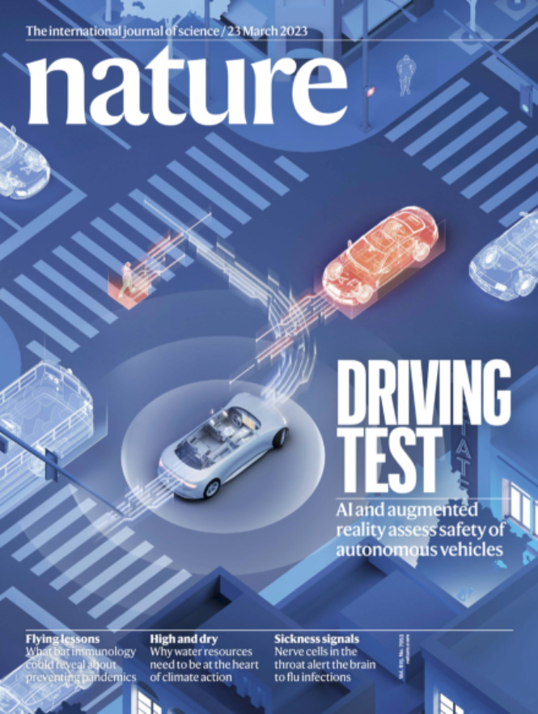
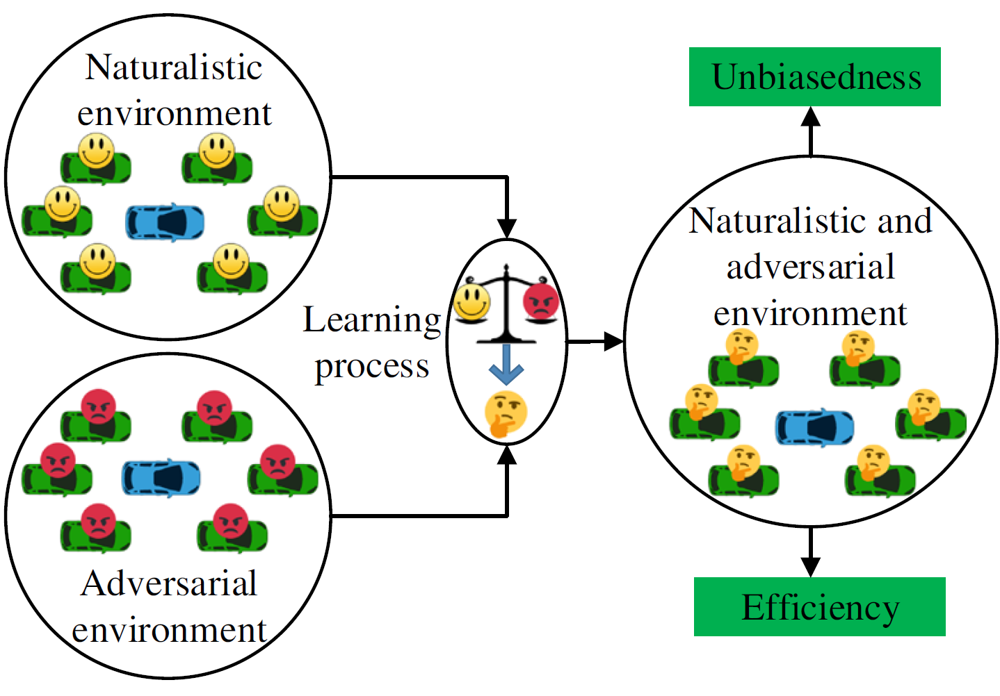

|
I am a fifth-year Ph.D. student advised by Prof. Henry Liu (Michigan Traffic Lab) at the University of Michigan, Ann Arbor. I recieved my Bachelor's degree from School of Vehicle and Mobility, Tsinghua University. My research interests lie in the safety of connected and automated vehicles, including naturalistic driving environment modeling and automated driving system testing and evaluation. |
{kind=link}
News
Selected Publications

|
The high-fidelity simulator is an effective tool for training and testing of autonomous vehicles. However, due to the high dimensionality of real-world driving environments and the rarity of long-tail safety-critical events, how to achieve statistical realism in simulation is a longstanding problem. To address this, we develop NeuralNDE, a deep learning-based framework that can reproduce the naturalistic driving environment with statistical realism, particularly for safety-critical situations. This study has been selected as a featured article at Editors' Highlights on "Applied physics and mathematics". The aim of the Editors' Highlights page is to showcase the 50 best papers recently published in an area. |
|  |
One critical bottleneck that impedes the development and deployment of autonomous vehicles is the prohibitively high economic and time costs required to validate their safety in a naturalistic driving environment, owing to the rarity of safety-critical events. Here we report the development of an intelligent testing environment, where artificial-intelligence-based background agents are trained to validate the safety performances of autonomous vehicles in an accelerated mode, without loss of unbiasedness. This study has been selected as the Nature journal cover of the March 23, 2023 Issue. - Media coverage: Nature News & Views | Nature Podcast | Nature Video | NSF | CCAT | University of Michigan News | Michigan Engineering |
|  |
Tests for autonomous vehicles are usually made in the naturalistic driving environment where safety-critical scenarios are rare. We propose a testing approach combining naturalistic and adversarial environment which allows to accelerate testing process and detect dangerous driving events. This study has been selected as a featured article at Editors' Highlights on "AI and machine learning". - Award: (SIG) Outstanding Paper in Intelligent Transportation Systems - Media coverage: CCAT | University of Michigan | TechXplore | Sohu |
Service
| Reviewer: IEEE T-ITS, IEEE T-IV, Transp. Res. Part C |
| Program Committee: ICRA 2023 SAD Workshop |